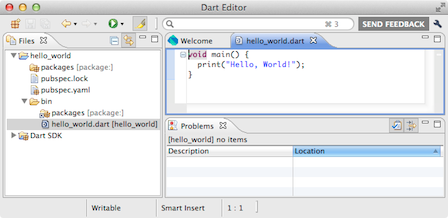

Dart 工具
下载编辑器、IDE 插件、命令行工具 等等

下载的 Dart 开发包中 包含了用来 开发、运行、 和调试 Dart 应用的所有工具。 Dart 编辑器、 Dartium、以及 SDK 工具 支持这些系统 , , or . Dart 开发者工具 不支持 Windows XP。
编辑器和 IDE
我们推荐开始学的时候用 Dart 编辑器。 在 Dart 下载包中包含了该编辑器， 编辑器能够和其他 Dart 工具一起开发调试程序。
| Dart 编辑器 |
另外，你也可以选择其他 IDE 的 Dart 开发插件：
| IntelliJ IDEA 和 WebStorm | |
| Eclipse | |
| |
Emacs |
| |
Sublime Text 2 |
| Vim |
其他下载资源
如果你使用其他编辑器或者 IDE， 或者你想离线阅读 Dart API ， 则你可能需要下载这些内容。
- API 文档
- Dart API 文档， 你也可以在 api.dartlang.org 查看最新的文档。
- Dartium
- 包含 Dart VM 的 Chromium ， 已经包含在 Dart 下载包中。
- SDK
-
库、命令行工具以及其他工具，
已经包含在 Dart 下载包中。
包含如下命令行工具：
- dart: 独立版本的 VM
- dart2js: Dart-to-JavaScript 编译器
- dartanalyzer: 静态分析器
- dartdoc: API 文档生成器
- pub: Dart 包管理器
提示
在开发过程中使用 Dart 工具的一些建议。
- 哪些文件不要提交到代码库中
- Dart 工具会生成一些文件， 这些文件只在本地有用，不要提交到代码库中。 这里是一些建议哪些文件不要 提交到代码库中。
- 调试 dart2js 生成的代码
- 用 Dart 编辑器和 Dartium 调试 Dart 应用很简单。 但是如何调试编译为 JavaScript 的应用呢？ 这里是特定浏览器的一些建议。
- 更多工具
- 本站点用两个没有包含在 SDK 中的工具来
测试和部署 Dart 代码：
下面的资源或许对你也有用：
- BOT, the Dart bag-of-tricks
- Heroku buildpack for Dart， 可以在 Heroku 云主机中运行你的 服务器端 Dart 应用